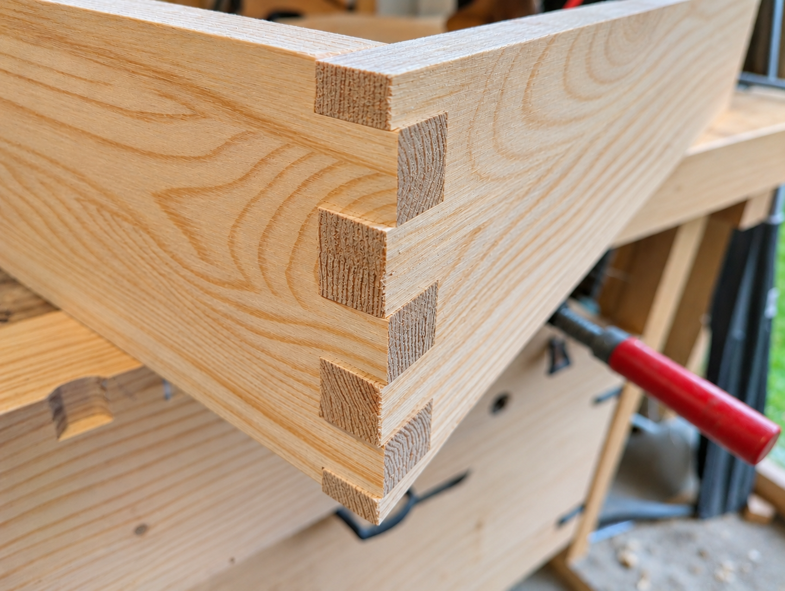

Menuiserie & impression 3D
Générateur de gabarits pour queues droites à la défonceuse

Des dents et des entailles régulières qui s’emboîtent : c’est le principe des queues droites.
Plusieurs méthodes permettent de les réaliser : outils à main, scie sur table avec un chariot, ou défonceuse avec une bague à copier et un guide en forme de peigne.
Les dimensions du peigne dépendent de la largeur souhaitée des queues, du diamètre extérieur de la bague et du diamètre de la fraise.
Adaptez ici le peigne à vos besoins. Les raccords puzzle permettent d’assembler plusieurs modules pour travailler sur une plus grande largeur. Téléchargez ensuite le fichier 3D (STL) pour imprimer le guide.
Pour passer à l’atelier : réaliser des queues droites à la défonceuse avec un guide imprimé en 3D — le tutoriel.
Chargement du modèle…
Votre gabarit
Dimensions en mmVue de dessus
Aperçu 2D
Télécharger à nouveau ce STL